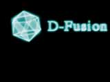

PowerToolBox general FAQ:
PowerToolBox related questions:
- What is PowerToolBox?
PowerToolBox is a free collection of high-end development kits for the PowerMacintosh provided with full source code, which are completely written for this plateform (64 Bits video memory access, pipelining...) and don't make any ToolBox call. This allows you to really use the power of the PowerPC plateform in your programs.
Each dev. kit contains: librairies + headers + documented source code + demo applications. - Why is PowerToolBox free?
Actually, most of the source code in PowerToolBox was developed for a high-end game (16 Bits graphics and CD quality sound) which never got out of my hard drive. Since I hate the idea of having spent hours of coding for nothing, I decided to make the source code available the source code the Mac developer community for free.
- Which advantages do I have when I use a PowerToolBox dev. kit rather than writing my own solution?
Writing theses kinds of routines is pretty difficult, but overall, it requires hours of debugging and testing until you are sure you found the best solution.
When using PowerToolBox dev. kits, all this work has already be done. And if a new version is released, you just have to replace the old library with the new one in your project file. - Who is the author of PowerToolBox?
Pierre-Olivier Latour is a French student of 19 years old, who is programming on the PowerMacintosh plateform for about 3 years and is now a member of the ADR program. He's been mainly working on audio programs and has an intimate knowledge of the Sound Manager, but he's now studying the graphic world of the Mac. In his free time, he's also a graphist and web designer beginner. If you want to develop cool projects with him, don't hesitate to contact him! - How do I contact the author of PowerToolBox?
Just send an e-mail to pol@french-touch.net.
Performances related questions:
- Can I see an application that use many dev. kits from PowerToolBox?
You can download the 15 second D-Fusion Demo, that makes an extensive use of 3D Blast (for basic shape 3D rendering), of FasterDraw (for buffering and writing to the screen in interlaced mode) and of some real-time filter effects. The demo runs at 30 FPS on a PowerBook 3400c/180, but it was limited to 20FPS to look the same on all computers.

You may also look at the SpriteDraw demo application (enclosed with the Dev. Kit) which uses FasterDraw for buffering and SpriteDraw for the sprites.
Development related questions:
- Which development languages requires PowerToolBox?
The part of your program that use PowerToolBox must be written in C/C++, since this is the format of the headers and source code. - What is the format of the PowerToolBox libraries?
The PowerToolBox libraries are provided as XCOFF libraries and/or as Shared Libraries.
Credits:
- PowerToolBox development kits code and documentations:
Pierre-Olivier Latour, Switzerland. - PowerToolBox web site:
Pierre-Olivier Latour, Switzerland.
Web sites:
You may be interested by visiting the following web sites related to the author of PowerToolBox:- Personnal web site (French version).
- French Touch: developer of high-end real-time 3D softwares.
- AudioFusion: audio / video solutions for PowerMacintoshes (English and French version).
- Mac Expert Magazine: a technical magazine on the Mac (French version).
Thanks to:
- All the author's friends for their support & ideas.
- Monkey Byte for hosting for free the SDKs on their FTP server.
- Apple for their amazing OS & computers.
- Adobe for their awesome program PhotoShop: all graphics on this site were made or edited with PhotoShop.
- Jerry Aman for his wonderful HTML editor PageSpinner: this whole site was made with his program.
- Developer Technical Support staff from Apple for their helpful answers to the author's questions.
- The Mac shareware community for its quality and innovation.
[ Home | FasterDraw | SpriteDraw | 3D Blast | FasterTime | 2D Transformations | Utilities | FAQ & Credits | License ]